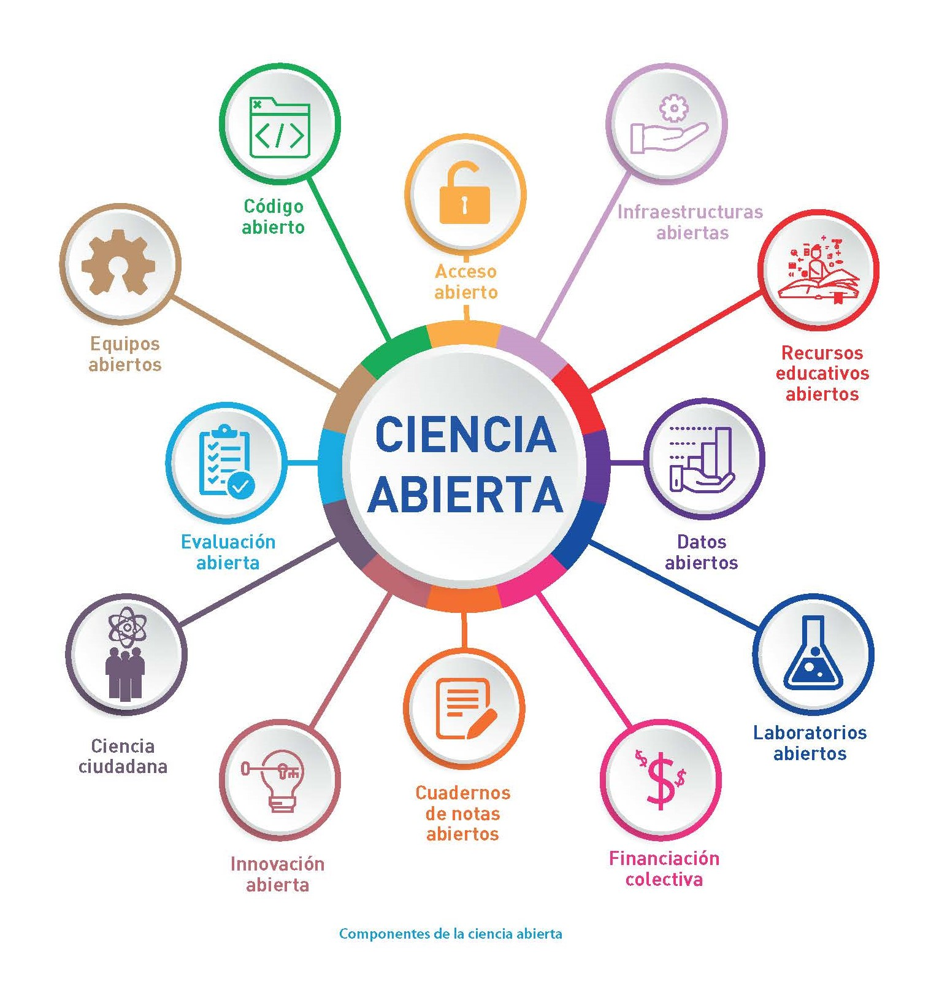

Este es el primer post en Quarto Bienvenidos!
Ciencia abierta (open science) es un movimiento mundial surgido de la comunidad científica que aboga por una mayor accesibilidad, colaboración, eficiencia, y transparecina de la investgación para que sea más democrática y con mayor vinculación a las necesidades de la sociedad. Es por ello que en esta clase impartida por el Dr. Miguel Equihua hemos aprendido a generar contenido cientifico desde otras plataformas e interfaces como Rstudio y Quarto. Es por ello que como estudiante de la Maestría de Ciencias Agropecuarias de la Universidad Veracruzana comparto parte de la investigación que se desarrolló acerca de la diversidad microbiana bacteriana de rizosfera y raíz de la vainilla y su relación con la Fusariosis en la región del Totonacapan.

La diversidad microbiana endófita en raíces de Vanilla planifolia Jacks. ex Andrews
Vanilla planifolia Jacks. ex Andrews es una planta altamente valorada por ser fuente de orgánica de vainillina, extraída de sus frutos, y utilizada como aroma y saborizante de comida (Fernández-Villa & Iglesias-Andreu, 2024; Iftikhar et al., 2023). Desafortunadamente, a nivel mundial, esta especie es afectada gravemente por la enfermedad de pudrición de tallo y raíz asociada a Fusarium oxysporum f. sp. vanillae (Carbajal-Valenzuela et al., 2022) (Fov) considerado el patógeno más devastador en estos sistemas de cultivo que provoca en pérdidas significativas en su producción comercial (Manrique-Barros et al., 2023; Ortega-Macareno et al., 2023). Paradójicamente, se ha observado que la sola presencia de Fov en vainilla no es suficiente para que la planta exprese síntomas (Carbajal-Valenzuela et al., 2022). Muchas especies de Fusarium no-patógeno habitan los tejidos de plantas como hongos endófitos o como saprobios del suelo haciendo que la naturaleza de su comportamiento dentro de la comunidad microbiana endófita de raíces de vainilla sea un enigma (Al-Ani, 2019). Así, aunque se sospecha que la planta o el resto de familias de microbios endófitos podrían influir en la virulencia de Fov, aún no existe evidencia concluyente al respecto (Carbajal-Valenzuela et al., 2022). Estudios previos sugieren que existen bacterias con efectos de biocontrol in vitro desarrolladas junto con Fov que podrían ser endófitos (Manrique-Barros et al., 2023). En consecuencia, identificar bacterias endófitas con roles funcionales tales como la inducción de Respuesta Sistémica Inducida (RSI) (Fernández-Villa & Iglesias-Andreu, 2024), producción de fitoanticipinas, cumarina u otros metabolitos secundarios a través de la activación de rutas metabólicas de la vainilla (Al-Ani, 2019) podría explicar y promover el fenómeno de la asintomatología aún en presencia de Fov. Este tipo de estudios resulta clave, dado que el desarrollo de genotipos resistentes al patógeno apenas cuenta con algunos esfuerzos (Ramírez-Mosqueda et al., 2019). Así, el presente estudio buscó responder qué familias bacterianas endófitas se identifican dentro de raíces de vainilla en presencia y ausencia de Fov y, por otra parte, si Fov induce un cambio en la diversidad microbiana. Se presupuso que Fov modificaría la composición de las comunidades microbianas endófitas en las raíces de vainilla contribuyendo a la reducción de su diversidad, un efecto que sería más notorio en etapas posteriores de desarrollo. El objetivo de esta investigación es identificar familias bacterianas endófitas y comparar la diversidad de estas en raíces en presencia y ausencia de Fov a dos diferentes tiempos de desarrollo. Con ello se espera contribuir a la comprensión de la naturaleza de Fov en la microbiota endófita y, posiblemente, al desarrollo de biopesticidas a través de la identificación y discusión de endófitos de raíz con potencial simbiótico que detonen la RSI o produzcan metabolitos secundarios de defensa.
Una historia contada desde el Totonacapan. Aqui la liga del articulo